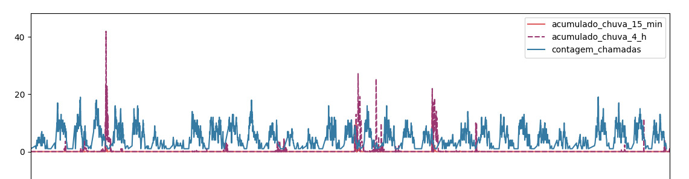
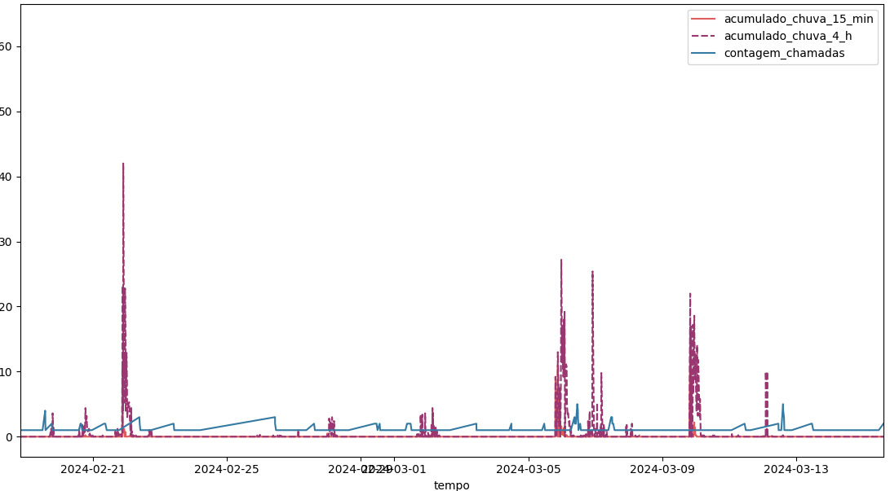
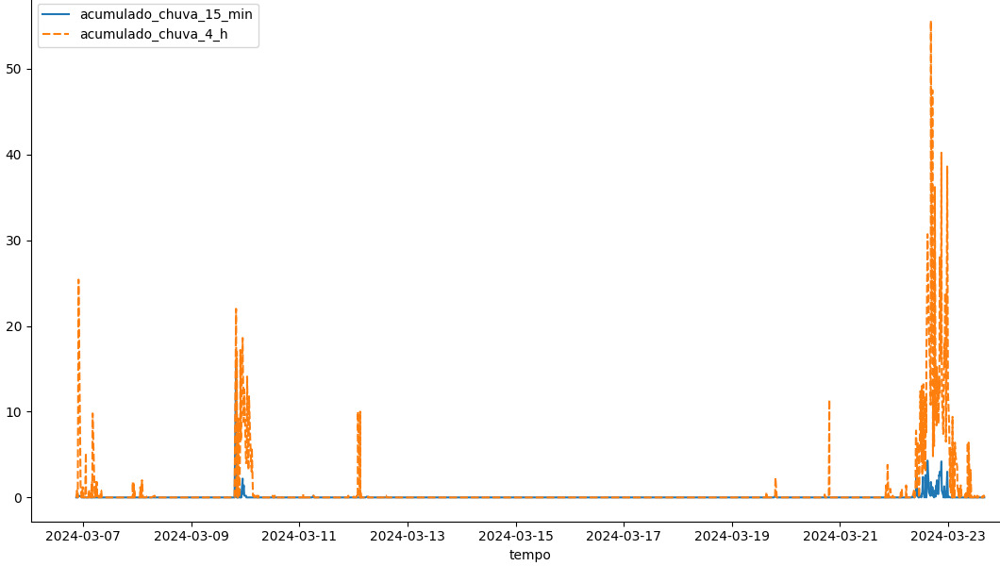
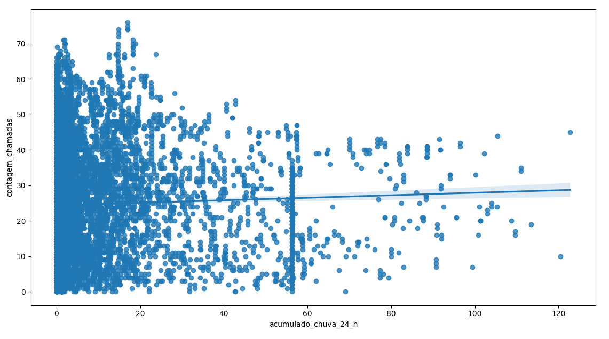
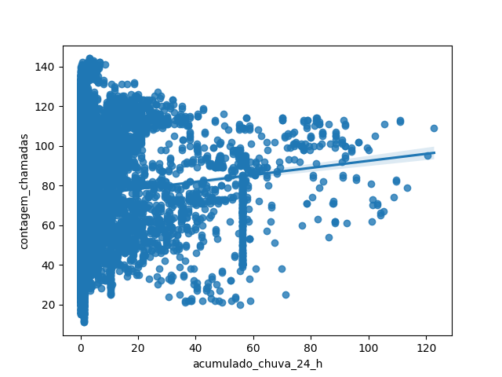

Gráficos e estatísticas
Focamos nossa exploração sobre os dados de chuva acumulada e chamados ao 1746, procurando por correlações entre eles. O objetivo é tentar prever aumentos nos chamados baseado nas previsões meteorológicas. Desse modo, facilitando a resposta das autoridades à eventos pluviais.
Começamos nossa análise plotando os dados de chuva acumulada e chamados ao 1746:
Em primeiro lugar, notamos a periodicidade dos chamados vinculada ao cíclo diurno. Isso já nos informa que qualquer correlação existente possuirá um atraso temporal.
A seguir, provemos um corte da imagem acima, mostrando um intervalo temporal menor:
A partir disso, nota-se também uma disparidade entre os acumulados de chuva em intervalos diferentes. Dado que os valores acumulados de 4 horas são a soma de vários acumulados de 15 minutos anteriores, espera-se que os picos de valores acumulados em 4 horas fossem antecedidos por vários valores não nulos dos acumulados de 15 minutos.
Vemos isso mais claramente na seguinte imagem, a qual ignora os chamados e demonstra que os acumulados de 15 minutos ocorrem apenas durante eventos chuvosos mais potentes. Uma possível hipótese é que os pluviometros possuem um limite mínimo para detecção.
Em seguida, começamos a plotar a contagem móvel de chamados contra os valores acumulados de chuva. A seguir, temos uma plotagem com uma janela de 6 horas para as chamadas:
A reta ajustada demonstra que, caso haja uma correlação, ela é quase irrelevante. Contudo, como discutido antes, há a possibilidade de que a correlação possua um grande atraso temporal e, portanto, será mais aparente para janelas maiores de chamados.
Seguimos essa ideia aumentando a janela móvel de chamados para 24 horas na seguinte imagem:
Vemos um consideravel aumento no ângulo da reta, fortificando a teoria de que a correlação existe sobre um atraso temporal.